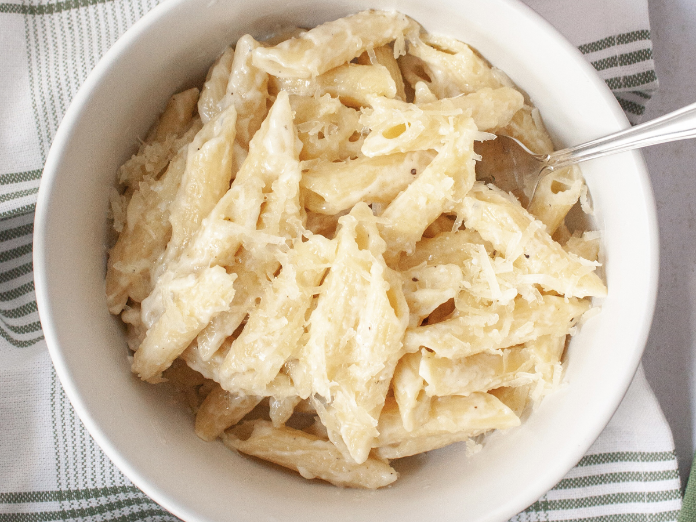

Alfredo

Description
Your classic alfredo possible! Our household favorite because it's quick, easy, and delicious.
Ingredients
- 1 tbsp butter
- 2 cloves garlic
- 1 tbsp flour
- 1 and 1/4 cups milk
- 1.5 oz cream cheese
- 1 cup fresh parmesan (I prefer the big flakes that come in the plastic cup to blocks out shredded)
- 1 box of penne noodles (or noodles of your choice)
Directions
- Get all of your stuff measured and prepped before cooking or it will be impossible.
- Put your noodles on to boil
- Add butter and garlic in the sauce pot. Mix that on medium heat for about 2 minutes.
- Add 1 tablespoon of flour, mix for just a few seconds until it's thick and kind of pasty.
- Add in 1 and 1/4 cups milk, wisk continuously for 7 minutes.
- Add cream cheese, mix for 2 minutes.
- Add Parmesan and mix until thoroughly blended.
- You're done! If you're still waiting for other stuff to finish, leave it on low heat and stir occasionally to keep the sauce from clumping.